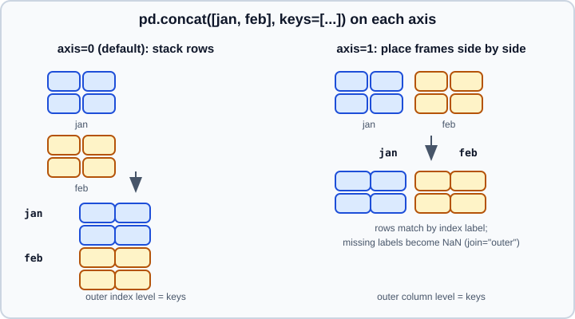

Concatenation
|
This content was generated with the assistance of AI and should be verified against the official documentation before being relied on in production. |
pd.concat glues pandas objects together along one axis, either stacking rows (axis=0, the default) or placing objects side by side (axis=1). It is the right tool when the pieces have the same kind of data and you just need them in one object: the monthly files of one export, the chunks of a large read, the results of a loop. When you need to match rows by the values of a column, as in a database join, use merge, described in Merge and Join.
This page targets pandas 3.1 on Python 3.13 or 3.14 and was checked in October 2026. Every example was run with Python 3.13 and pandas 3.1.0, and the output shown is real. DataFrame.append and Series.append were removed in pandas 2.0, so concat is the only way to add rows from another object, as explained in Building a frame from many pieces.
All examples use three small shipment tables:
import warnings
import numpy as np
import pandas as pd
jan = pd.DataFrame({"sku": ["A1", "B2"], "qty": [5, 3]}, index=[0, 1])
feb = pd.DataFrame({"sku": ["A1", "C3"], "qty": [7, 2]}, index=[0, 1])
mar = pd.DataFrame({"sku": ["D4"], "qty": [9], "note": ["rush"]}, index=[0])
print(jan) sku qty
0 A1 5
1 B2 3The two axes

The signature, with the arguments this page explains:
| Argument | Meaning |
|---|---|
|
A sequence (list, tuple, generator) or a dict of |
|
|
|
|
|
Replace the concatenation axis labels with |
|
Build a hierarchical label that records where each piece came from |
|
Raise if the result would have duplicate labels on the concatenation axis |
|
Sort the non-concatenation axis when it is not already aligned; default |
|
Deprecated in 3.0: Copy-on-Write defers copies, so the argument has no use |
Stacking rows (axis=0)
By default the index values of the pieces are kept as they are, which produces duplicate labels when each piece starts at zero:
print(pd.concat([jan, feb]))
print(pd.concat([jan, feb], ignore_index=True)) sku qty
0 A1 5
1 B2 3
0 A1 7
1 C3 2
sku qty
0 A1 5
1 B2 3
2 A1 7
3 C3 2Source: pandas API: pandas.concat
ignore_index=True renumbers the rows. Use it when the index carries no meaning; keep the original index when it does (customer ids, timestamps).
Remembering where each row came from: keys
keys adds an outer level to the index, one label per piece, so you can tell the pieces apart afterwards and select them with loc. names names the resulting levels. Passing a dict does the same, with the dict keys as the keys:
both = pd.concat([jan, feb], keys=["jan", "feb"], names=["month", "row"])
print(both)
print(both.loc["feb"])
print(pd.concat({"jan": jan, "feb": feb, "mar": mar}).index.tolist()) sku qty
month row
jan 0 A1 5
1 B2 3
feb 0 A1 7
1 C3 2
sku qty
row
0 A1 7
1 C3 2
[('jan', 0), ('jan', 1), ('feb', 0), ('feb', 1), ('mar', 0)]Source: pandas API: pandas.concat
Selecting on the resulting MultiIndex is covered in MultiIndex. If you would rather have the label as an ordinary column, add it before concatenating:
print(pd.concat([jan.assign(src="jan"), feb.assign(src="feb")], ignore_index=True)) sku qty src
0 A1 5 jan
1 B2 3 jan
2 A1 7 feb
3 C3 2 febSource: pandas API: pandas.concat
levels lets you set the full list of values of the outer level, including ones no piece uses, so that the levels have a fixed order:
lv = pd.concat([jan, feb], keys=["jan", "feb"], levels=[["jan", "feb", "mar"]])
print(lv.index.levels)[['jan', 'feb', 'mar'], [0, 1]]Source: pandas API: pandas.concat
Catching accidental duplicates: verify_integrity
try:
pd.concat([jan, feb], verify_integrity=True)
except ValueError as e:
print("ValueError |", e)
print(pd.concat([jan, feb], keys=["jan", "feb"], verify_integrity=True).shape)ValueError | Indexes have overlapping values: Index([0, 1], dtype='int64')
(4, 2)Source: pandas API: pandas.concat
Adding keys makes the labels unique, so the check passes. verify_integrity only checks the concatenation axis, and it is a one-off check at the call; to make duplicates an error for the lifetime of an object use set_flags(allows_duplicate_labels=False), described in Duplicate Labels and Rows.
Different columns: join and sort
The pieces rarely have exactly the same columns. With the default join="outer" the result has the union of the columns and fills the gaps with NaN; with join="inner" it keeps only the shared columns, dropping the data in the others without warning:
print(pd.concat([jan, mar]))
print(pd.concat([jan, mar], join="inner")) sku qty note
0 A1 5 NaN
1 B2 3 NaN
0 D4 9 rush
sku qty
0 A1 5
1 B2 3
0 D4 9Source: pandas API: pandas.concat
Column order follows first appearance. sort=True sorts the columns instead, which is rarely what you want for a report but gives a deterministic order when pieces list columns in different orders:
print(pd.concat([mar, jan]).columns.tolist())
print(pd.concat([mar, jan], sort=True).columns.tolist())['sku', 'qty', 'note']
['note', 'qty', 'sku']Source: pandas API: pandas.concat
Column names are matched exactly. "Qty" and "qty" are different columns, which is the most common reason a concatenation produces unexpected NaN columns; check set.symmetric_difference of the column lists when pieces come from different sources.
Placing objects side by side (axis=1)
Along axis=1 pandas aligns on the index labels, not on position. Rows that exist in only some objects get NaN; join="inner" keeps only the common labels:
print(pd.concat([jan, feb], axis=1))
print(pd.concat([jan, feb], axis=1, keys=["jan", "feb"]))
print(pd.concat([jan, mar], axis=1, join="inner")) sku qty sku qty
0 A1 5 A1 7
1 B2 3 C3 2
jan feb
sku qty sku qty
0 A1 5 A1 7
1 B2 3 C3 2
sku qty sku qty note
0 A1 5 D4 9 rushSource: pandas API: pandas.concat
Alignment needs unique labels. If any object has duplicates, pandas cannot decide which rows match and raises InvalidIndexError:
d1 = pd.DataFrame({"v": [1, 2]}, index=[0, 0])
d2 = pd.DataFrame({"w": [3, 4]}, index=[0, 1])
try:
pd.concat([d1, d2], axis=1)
except Exception as e:
print(type(e).__name__, "|", e)InvalidIndexError | Reindexing only valid with uniquely valued Index objectsSource: pandas API: pandas.concat
When the objects have the same length and you want to join them by position regardless of their labels, reset the indexes first or use ignore_index=True, which also relabels the columns:
print(pd.concat([jan.reset_index(drop=True), feb.reset_index(drop=True)], axis=1))
print(pd.concat([jan, feb], axis=1, ignore_index=True)) sku qty sku qty
0 A1 5 A1 7
1 B2 3 C3 2
0 1 2 3
0 A1 5 A1 7
1 B2 3 C3 2Source: pandas API: pandas.concat
Side-by-side concatenation with the same column names produces duplicate column names, as the first output above shows (sku and qty twice). Give the pieces keys or rename the columns.
Series
Series are concatenated the same way. Along axis=0 they are stacked; along axis=1 each becomes a column, named by its name, or by the keys:
a = pd.Series([1, 2], name="x")
b = pd.Series([3, 4], name="y")
print(pd.concat([a, b]))
print(pd.concat([a, b], axis=1))
print(pd.concat([a, b], axis=1, keys=["first", "second"]))
print(pd.concat([jan, pd.Series([1, 2], name="extra")], axis=1))
print(pd.concat([jan, pd.Series([1, 2], name="extra")]))0 1
1 2
0 3
1 4
dtype: int64
x y
0 1 3
1 2 4
first second
0 1 3
1 2 4
sku qty extra
0 A1 5 1
1 B2 3 2
sku qty extra
0 A1 5.0 NaN
1 B2 3.0 NaN
0 NaN NaN 1.0
1 NaN NaN 2.0Mixing a DataFrame and a Series along axis=0 turns the Series into a new column (named after the Series) that is NaN in the frame’s rows, which is rarely intended; convert it with to_frame first.
Source: pandas API: pandas.concat
What dtype does the result have?
concat finds a common dtype for each column. Integers and floats combine into floats, numbers and strings fall back to object, and a column that exists in only some pieces becomes float when NaN has to fill it:
i = pd.DataFrame({"n": [1, 2]})
f = pd.DataFrame({"n": [1.5]})
s = pd.DataFrame({"n": ["x"]})
print(pd.concat([i, f]).dtypes.to_dict())
r = pd.concat([i, s])
print(r["n"].dtype, r["n"].tolist())
x = pd.concat([pd.DataFrame({"a": [1, 2]}), pd.DataFrame({"b": [3.0]})])
print(x.dtypes.to_dict()){'n': dtype('float64')}
object [1, 2, 'x']
{'a': dtype('float64'), 'b': dtype('float64')}Source: pandas API: pandas.concat
The first piece’s integer column a became float64 because it has missing values now. The nullable integer dtypes avoid that; see Nullable Integer and Boolean.
Empty and all-missing pieces take part in dtype resolution: an empty float column turns an integer column into float, and so does a column holding only NaN. A completely empty DataFrame() has no columns and changes nothing, but it is still better to build the list of pieces without placeholders:
empty_float = pd.DataFrame({"a": pd.Series(dtype="float64")})
print(pd.concat([empty_float, pd.DataFrame({"a": [1, 2]})]).dtypes.to_dict())
print(pd.concat([pd.DataFrame(), pd.DataFrame({"a": [1, 2]})]).dtypes.to_dict())
print(pd.concat([pd.DataFrame({"a": [np.nan]}), pd.DataFrame({"a": [1]})]).dtypes.to_dict()){'a': dtype('float64')}
{'a': dtype('int64')}
{'a': dtype('float64')}Source: pandas API: pandas.concat
Categorical columns keep their dtype only when the categories are identical in every piece. With different categories pandas falls back to the dtype of the values; use pandas.api.types.union_categoricals to build a combined categorical explicitly (see Categorical Data):
from pandas.api.types import union_categoricals
c1 = pd.DataFrame({"c": pd.Categorical(["a", "b"])})
c2 = pd.DataFrame({"c": pd.Categorical(["b", "z"])})
print(pd.concat([c1, c2])["c"].dtype)
print(union_categoricals([c1["c"], c2["c"]]).dtype)str
categoryTime zones behave the same way: a time-zone-aware column concatenated with a naive one becomes object rather than failing. Convert both to the same zone first (see Time Series and Dates).
pandas 3 also made text a first-class dtype, so concatenating str columns stays str; see Text Data and the str Dtype.
The copy keyword
pd.concat(..., copy=False) was a performance hint for years. Copy-on-Write is the only mode in pandas 3, so data are copied lazily anyway, and the argument is deprecated and emits a Pandas4Warning:
with warnings.catch_warnings(record=True) as w:
warnings.simplefilter("always")
pd.concat([jan, feb], copy=False)
print(w[0].category.__name__)Pandas4WarningSource: pandas API: pandas.concat
Remove the argument; call .copy() on the result only if you need an eager copy.
Building a frame from many pieces
The removed DataFrame.append led to a common anti-pattern: growing a frame row by row in a loop. Every step copied all existing data, so the cost grew quadratically. The efficient pattern is to collect the pieces in a list and call concat once:
rows = [{"i": k, "sq": k * k} for k in range(5)]
print(pd.DataFrame(rows)) # rows as dicts: build directly
frames = [pd.DataFrame({"i": [k]}) for k in range(3)]
print(pd.concat(frames, ignore_index=True)) i sq
0 0 0
1 1 1
2 2 4
3 3 9
4 4 16
i
0 0
1 1
2 2Source: pandas API: pandas.concat
The same applies to files. Reading each file into a frame and concatenating them once is the standard way to load a split dataset; concat accepts a generator, so only one input is parsed at a time while the list of results grows:
import io
csvs = ["id,v\n1,2\n", "id,v\n3,4\n"]
print(pd.concat((pd.read_csv(io.StringIO(t)) for t in csvs), ignore_index=True)) id v
0 1 2
1 3 4Source: pandas API: pandas.concat
With real files the generator reads from disk, for example (pd.read_csv(p) for p in sorted(Path("data").glob("*.csv"))). Reading is covered in CSV and Text Files. For data that does not fit in memory see Scaling to Large Datasets.
Calling the removed method fails immediately:
try:
jan.append(feb)
except AttributeError as e:
print("AttributeError |", e)AttributeError | 'DataFrame' object has no attribute 'append'Source: pandas API: pandas.concat
Also, concat takes the sequence as its single positional argument; pd.concat(jan, feb) raises TypeError: concat() takes 1 positional argument but 2 were given.
Filling gaps from another object: combine_first and update
Concatenation never overwrites values. To fill the missing values of one object from another, matching on labels, use combine_first; to overwrite values from another object, use update:
base = pd.DataFrame({"qty": [1.0, np.nan, 3.0]}, index=["a", "b", "c"])
patch = pd.DataFrame({"qty": [10.0, 20.0, np.nan, 40.0]}, index=["a", "b", "c", "d"])
print(base.combine_first(patch))
u = base.copy()
u.update(patch)
print(u) qty
a 1.0
b 20.0
c 3.0
d 40.0
qty
a 10.0
b 20.0
c 3.0combine_first keeps the caller’s values where they exist (a stays 1.0), takes the other object’s values elsewhere, and includes labels only the other has (d). update works in place on the caller, modifies only existing labels (d is not added), skips missing values in the other object (c stays 3.0), and overwrites existing values (a becomes 10.0).
MultiIndex columns
Concatenating objects whose columns are MultiIndexes along axis=1 stacks the column levels, which is a convenient way to build a hierarchical header:
m1 = pd.DataFrame(np.arange(4).reshape(2, 2), columns=pd.MultiIndex.from_product([["a"], ["x", "y"]]))
m2 = pd.DataFrame(np.arange(4).reshape(2, 2), columns=pd.MultiIndex.from_product([["b"], ["x", "y"]]))
print(pd.concat([m1, m2], axis=1)) a b
x y x y
0 0 1 0 1
1 2 3 2 3concat compared with the alternatives
| Need | Tool |
|---|---|
Stack pieces with the same columns |
|
Add the columns of another object, aligned by index label |
|
Match rows by the values of key columns, like a SQL join |
|
Fill gaps in one object from another |
|
Reshape one table between wide and long |
|
The same as SQL |
|
Pitfalls summary
-
Collect pieces in a list and concatenate once; never grow a frame in a loop.
-
Check the index of the result: duplicates are kept unless you use
ignore_index,keysorverify_integrity. -
Check the columns of the result for unexpected
NaNcolumns caused by names that differ in case or spelling. -
Check dtypes after concatenation, especially integer columns that gained
NaN, categoricals and time zones. -
join="inner"silently drops columns (or rows, onaxis=1) that are not common. -
Remove
copy=arguments left over from pandas 2.x code.
Older advice that no longer applies
| Older tutorial or book says | Today |
|---|---|
|
Removed in 2.0; use |
|
Deprecated in 3.0 because of Copy-on-Write; omit the argument |
|
Removed in 1.0; reindex the result, or the inputs, explicitly |
References
-
pandas user guide, Merge, join, concatenate and compare: https://pandas.pydata.org/docs/user_guide/merging.html
-
pandas.concat: https://pandas.pydata.org/docs/reference/api/pandas.concat.html -
DataFrame.combine_first: https://pandas.pydata.org/docs/reference/api/pandas.DataFrame.combine_first.html -
DataFrame.update: https://pandas.pydata.org/docs/reference/api/pandas.DataFrame.update.html -
pandas.api.types.union_categoricals: https://pandas.pydata.org/docs/reference/api/pandas.api.types.union_categoricals.html -
pandas 2.0.0 release notes: https://pandas.pydata.org/docs/whatsnew/v2.0.0.html
-
pandas 3.0.0 release notes: https://pandas.pydata.org/docs/whatsnew/v3.0.0.html